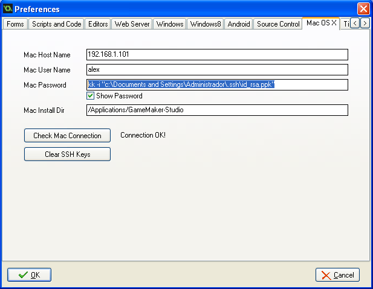

How to configure GameMaker to use your private key
When you want to export your game to Mac OSX, GameMaker only accepts password based authentication scheme between both machines.
But I would rather use public key pair authentication scheme. The only way I found to trick GameMaker is just injecting the required plink arguments in the password field like this:
kk -i "c:\Documents and Settings\Administrador\.ssh\id_rsa.ppk"
